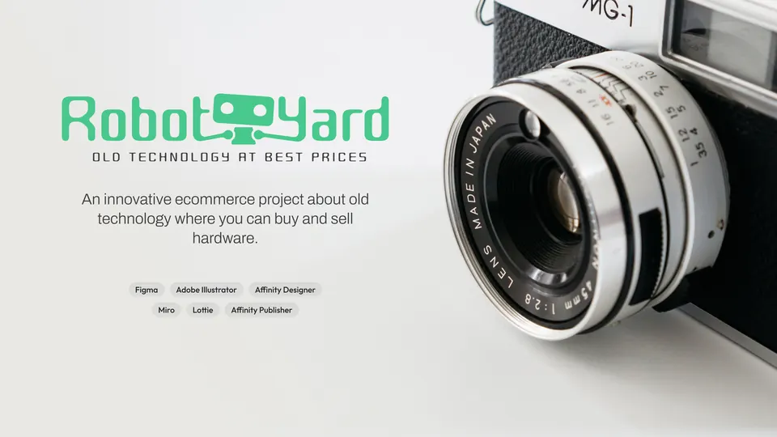
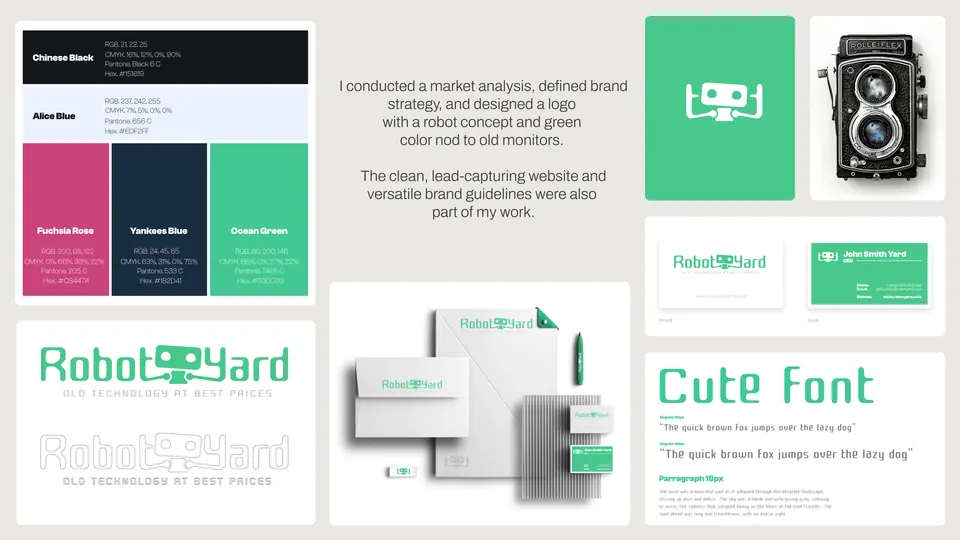

04 — Branding · E-commerce
Robotyard
Robotyard is a marketplace built for a very specific kind of shopper: people who buy and sell vintage cameras, game consoles and old computers. It needed a brand and a store that felt just as considered as the hardware itself.

Overview
Robotyard is an e-commerce marketplace for old technology — classic cameras, retro game consoles, vintage computers and the accessories that go with them — built for collectors who care as much about condition and provenance as price.
I owned the project end to end: market analysis, brand strategy, logo and identity, and the e-commerce website itself, built to actually convert browsers into buyers and sellers.
Challenge
- 01Vintage tech is a niche, detail-obsessed market — a generic marketplace look would have undersold the products and the audience.
- 02The brand needed a visual nod to the category itself, without tipping into kitsch or looking like a novelty store.
- 03The website had to handle browsing by category (cameras, consoles, computers, music) as easily as it captured leads for people wanting to sell.
- 04Everything — logo, stationery, guidelines and site — needed to hold together as one coherent, versatile system.
Process
I started with a market analysis and brand strategy, then designed a robot-concept logo in green, a five-colour palette (Chinese Black, Alice Blue, Fuchsia Rose, Yankees Blue and Ocean Green), stationery and a playful display typeface — before building the lead-capturing store around them.


Solution
A complete brand system — logo, colour palette, typography and stationery — paired with a clean, lead-capturing e-commerce website that lets collectors browse by category and lets sellers get in touch just as easily.
At a glance